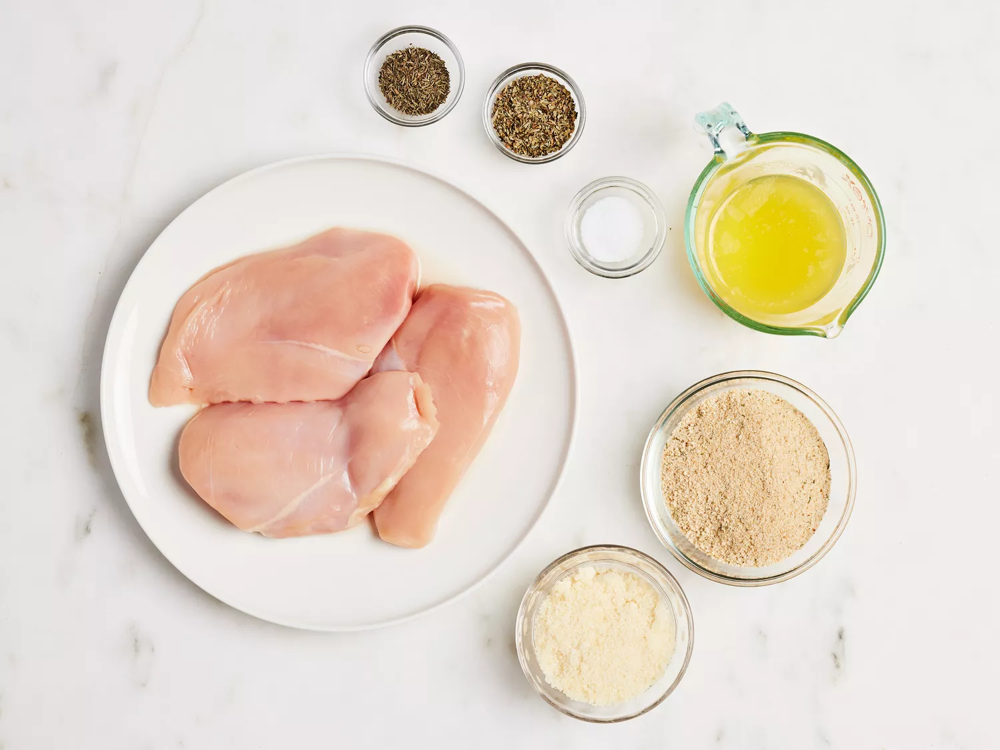
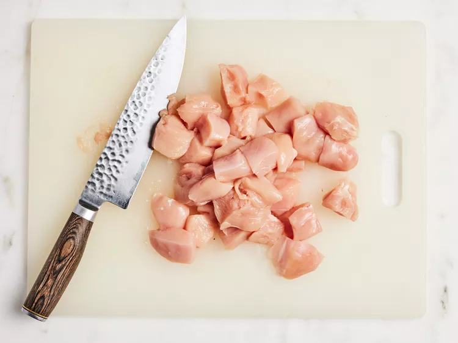
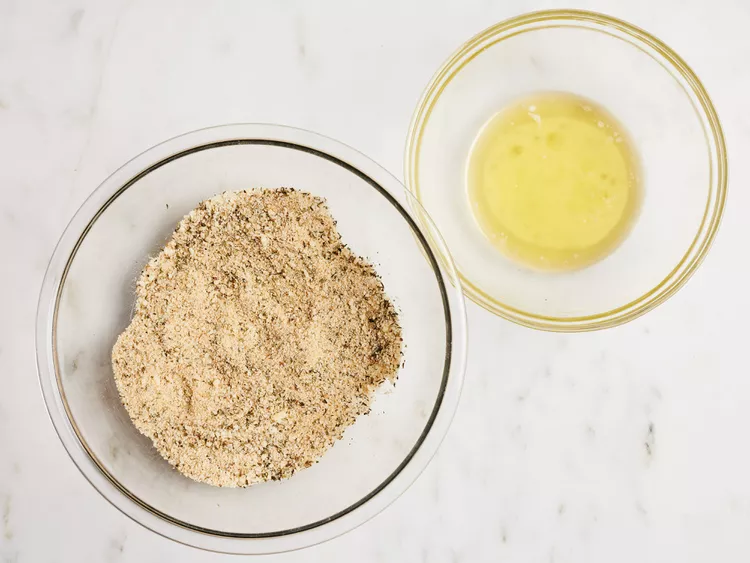
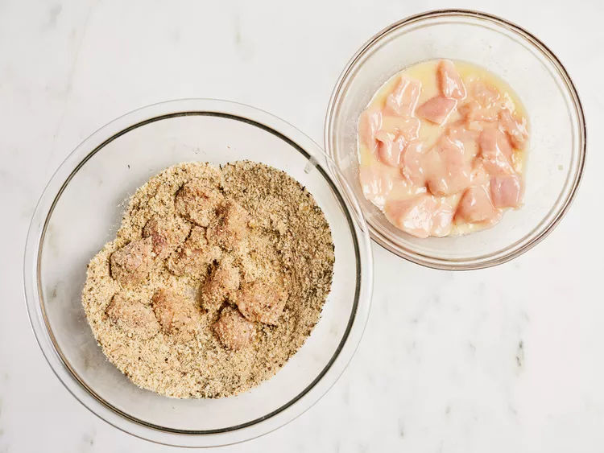
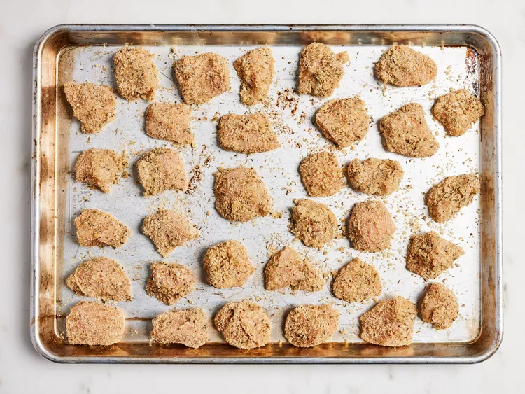
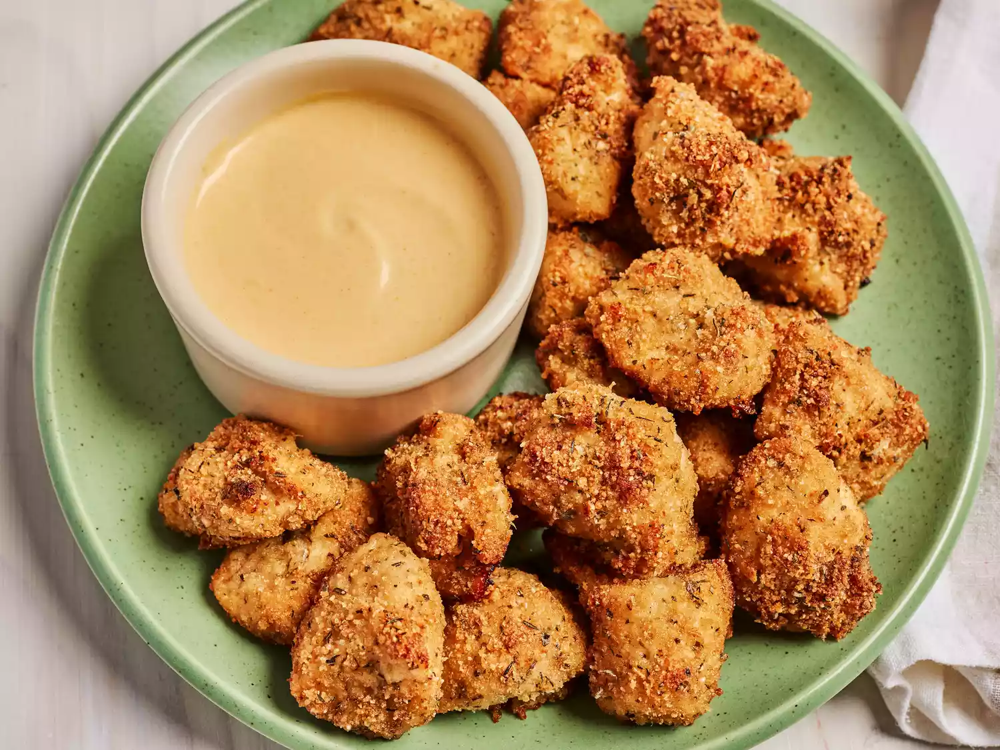
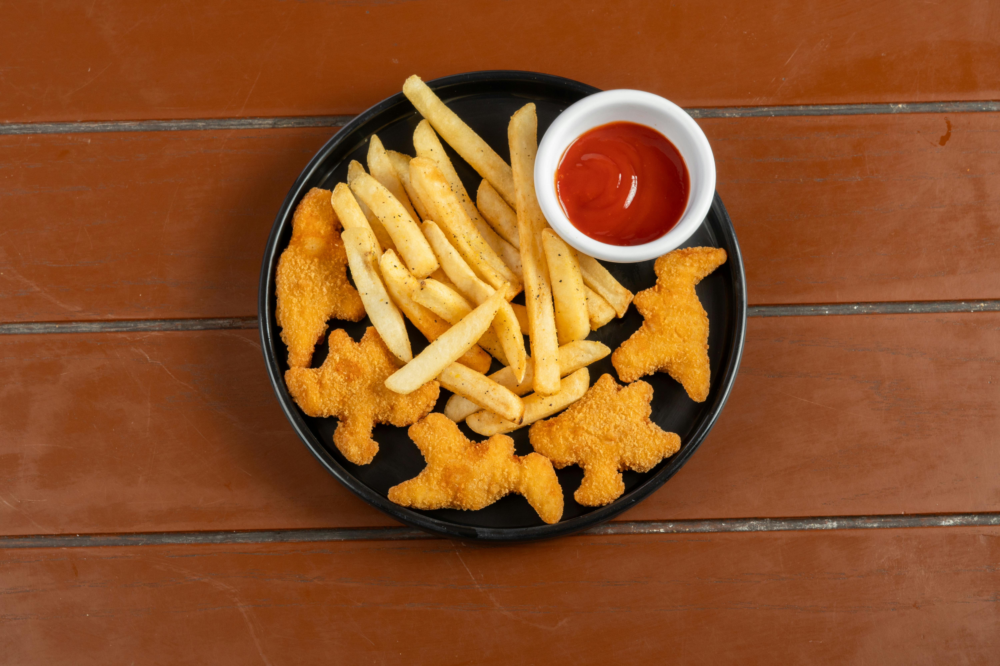

Homemade Chicken Nuggets
Crispy on the outside and tender on the inside, these homemade chicken nuggets are a family favorite. They are healthier than fast food and easy to prepare, making them perfect for both kids and adults.
Recipe Information
Preparation time: 20 minutes
Cooking time: 15 minutes
Servings: 6 people
Difficulty level: Beginner
Ingredients
- 3 skinless, boneless chicken breasts
- 1 cup Italian seasoned bread crumbs
- ½ cup grated Parmesan cheese
- 1 tablespoon dried basil
- 1 teaspoon dried thyme
- 1 teaspoon salt
- ½ cup butter, melted
Instructions
- Gather all ingredients. Preheat the oven to 400 degrees F (200 degrees C).

- Cut chicken breasts into 1 1/2-inch pieces.

- Mix the bread crumbs, Parmesan, basil, thyme, and salt together well in a medium bowl.
Put melted butter in a bowl or dish for dipping.

- Roll chicken pieces in breadcrumbs until evenly coated.

- Heat oil in a frying pan and cook nuggets for 3–4 minutes on each side until golden brown and fully cooked.

- Remove and place on paper towels to drain excess oil before serving.

Tips
For extra crunch, use panko breadcrumbs instead of regular ones.
You can also bake the nuggets at 200°C (400°F) for 20 minutes if you prefer a healthier version.
Serve with ketchup, mayo, or your favorite dipping sauce for the best experience.
Serving Suggestions
These chicken nuggets pair wonderfully with:
- French fries or potato wedges
- Fresh salad with lettuce, tomatoes, and cucumbers
- Mashed potatoes with gravy
- Steamed vegetables like broccoli or carrots
- Classic dipping sauces such as honey mustard, BBQ, or sweet chili
Finished Dish
